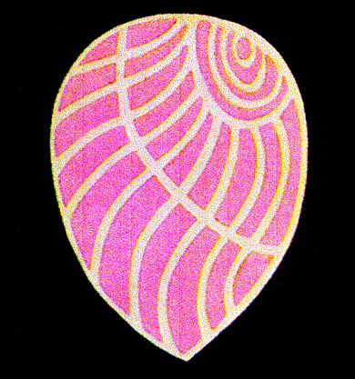

35. The ethereal forms and the laver
|
Master Aivanhov mentions in the book "New Light on the Gospels" that the depictions of the snake have particular symbolisms, and they are three: the straight line, the spiral and the circle, where finally the snake bites its tail. The sequence concerns a substantial symbolism. Aivanhov says that "the snake (...) in the beginning crawls on land. After that it rises upward, taking a shape of an emerging spiral which is the vertebral column, the spine. Finally he must unite the two ends, head and tail to make the circle, i.e. to get into the harmonics, symmetrical and creative movements of eternity. Then all emanations, all energies are allocated, organised and there are no longer conflicts or inconsistencies between them. All points of the periphery that is at equal distance from the centre produce exquisite wave emissions." From the top of my friend's head ethereal sea shells with stripes emerge, which are of mauve and blue colours. I read in Bezant's and Leadbeater's book "Thought-Forms", that when they saw this ethereal form, it was emerging from the top of a man's head who was meditating and was specifically sending love around the world. I also display the picture as they recorded it. |

|  | The laver when extracted from the sea shell is yellow. Then, if it's exposed to sunlight, it successively turns from yellow to green, then blue and finally dark red with violet shades. These are also the colours the soul takes consecutively during its long journey on earth, through its many incarnations. So, the sea shell symbolizes the transformation of people into Masters. It is the symbol of the full lives' cycle on this planet. I'm thinking that this is the knowledge they must have had from ancient times and it passed over to ancient Greece, where they dyed their clothes crimson-purple, so symbolising the purple light towards which the soul was heading to achieve its perfection. |
{kind=link}